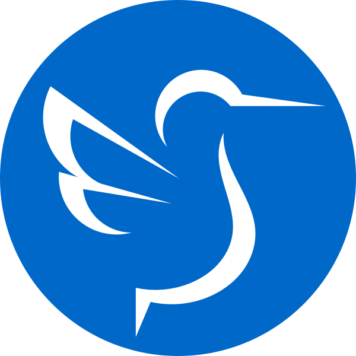

______________________
/===============\
/ > RisBrine404 < \
\=================/
اÙلسّÙÙ„Ùام٠عÙÙ„ÙيْكÙمْ ÙˆÙرÙØْمÙØ©ÙاللّÙÙ‡Ù ÙˆÙبÙرÙÙƒÙاتÙÙ‡Ù
/---------------------\
\ [≤/≥] WELCOME [1\0] /
\___________________/

Share Hack System Technologi
[--!!:WARNING:!!--]
SEBAGIAN SCRIPT MENGALAMI
!!! ERROR / MASALAH !!!
[ >> MOHON DIMAKLUMI << ]
Halo selamat datang di website saya.
Dibawah ini ialah akun media sosial saya
Bila bisa tolong Bantu follow/ikuti/subscribe/like akun yang ada di bawah ini
SOCIAL MEDIA


/==============\
/ Web Installasi \
\ .Distro Linux. /
\==============/
-
 •⟩ ~Web /Kali Linux
Kelebihan:
•⟩ ~Web /Kali Linux
Kelebihan:
  > Fokus ke keamanan
  > Ringan dan cepat
Kekurangan:
  > Tidak ramah pengguna umum
Cocok untuk: ethical hackers/testersKode Tambahan Termux:
  $ termux-change-repo
  $ apt update && apt upgrade -y
  $ pkg install neofetch
  $ neofetch
Aplikasi Tambahan:
  Termux F-Droid
  Nethunter Store -
•⟩ ~Web /Tails
Kelebihan:
  > Sistem keamanan terbaik
  > Ringan
Kekurangan:
  > Booting cabut pasang (untuk keamanan)
Cocok untuk: pengguna privasi tinggi -
 •⟩ ~Web /Arch
Kelebihan:
•⟩ ~Web /Arch
Kelebihan:
  > Kustomisasi tinggi
  > Tools advanced
  > Komunitas kuat
Kekurangan:
  > Butuh pengetahuan Linux
Cocok untuk: pengguna advanced -
 •⟩ ~Web /Gentoo Linux
Kelebihan:
•⟩ ~Web /Gentoo Linux
Kelebihan:
  > Ringan dan cepat
  > Kontrol kustomisasi penuh
Kekurangan:
  > Butuh pengetahuan cukup
Cocok untuk: pengguna advanced -
 •⟩ ~Web /openSUSE
Kelebihan:
•⟩ ~Web /openSUSE
Kelebihan:
  > Fitur lengkap
  > Multimedia terbaik
  > Paket efisien
Kekurangan:
  > Bukan untuk pemula
Cocok untuk: sysadmins & developers -
•⟩ ~Web /Linux Mint
Kelebihan:
  > Multimedia
  > Stabil & ringan
Kekurangan:
  > Tampilan desktop klasik
Cocok untuk: pemula -
 •⟩ ~Web /Debian
Kelebihan:
•⟩ ~Web /Debian
Kelebihan:
  > Aman & ringan
Kekurangan:
  > Tampilan jadul
Cocok untuk: semua orang -
 •⟩ ~Web /Deepin
Kelebihan:
•⟩ ~Web /Deepin
Kelebihan:
  > Tampilan stylish
  > Paket Debian
Kekurangan:
  > Berat & lambat
Cocok untuk: pengguna rumahan -
 •⟩ ~Web /Ubuntu
Kelebihan:
•⟩ ~Web /Ubuntu
Kelebihan:
  > Ramah pengguna
  > Stabil & aman
  > Update berkala
Kekurangan:
  > Tampilan standar
Cocok untuk: pemula -
•⟩ ~Web /Lubuntu
Kelebihan:
  > Sistem jadul
  > Ringan & efisien
Kekurangan:
  > Penggunaan berat
Cocok untuk: hardware jadul -
 •⟩ ~Web /Peppermint OS
Kelebihan:
•⟩ ~Web /Peppermint OS
Kelebihan:
  > Bersih & modern
  > Ramah pengguna
  > Integrasi cloud
Kekurangan:
  > Update jarang
Cocok untuk: semua pengguna -
 •⟩ ~Web /elementary OS
Kelebihan:
•⟩ ~Web /elementary OS
Kelebihan:
  > Muda & segar
  > Kebutuhan desktop
Kekurangan:
  > Mirip Mac
Cocok untuk: pemula -
 •⟩ ~Web /CentOS
Kelebihan:
•⟩ ~Web /CentOS
Kelebihan:
  > Stabil
Kekurangan:
  > Bukan desktop harian
Cocok untuk: home server
/================\
/ Recomended Kawan \
\ Kelas Belajar IT /
\================/


/===========\
/ My__Projeck \
\ ..<(^_^)>.. /
\===========/
 •⟩ ~Website Official School
•⟩ ~Website Official School- •⟩ ~Hitung Danom Uang Per Lermbar
- •⟩ ~Code Editor
- •⟩ ~Code Morse
- •⟩ ~Website Belajar Manipulasi (PENCEGAHAN)
- •⟩ ~Catatan Keuangan (Pengeluaran/Pemasukan)
- •⟩ ~Catatan Keuangan (Grafik Penghasilan)
- •⟩ ~Catatan Transaksi Hutang
- •⟩ ~Web Quote+AudioShare Hack System Technologi
- •⟩ ~Slide Video Job
- •⟩ ~E-Commerce Go WhatsApp
- •⟩ ~Web Daftar Nama AlumniSDN Mojowarno 1 (2017/2018)
- •⟩ ~Web Ucapan Idul Fitri 2025
- •⟩ ~Web Menyambut Ramadhan 2022
- •⟩ ~Web RisBrine Profile Identity
- •⟩ ~Web List Latihan Olahraga/Bela Diri
- •⟩ ~Web Game Faster Eye Ball
- •⟩ ~Web Belajar Data Analys
- •⟩ ~Web Personal Portfolio Animation(Khusus Windows Chrome)
- •⟩ ~Web Personal Portfolio
- •⟩ ~Web Ultah For Denta
- •⟩ ~Web Ultah (One Target)
=====================
ÙˆÙالسÙّلÙام٠عÙÙ„ÙيْكÙمْ ÙˆÙرÙØْمÙØ©ÙاللÙّه٠وÙبÙرÙÙƒÙاتÙÙ‡
=====================